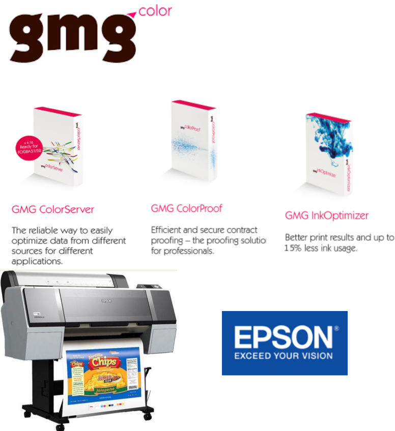
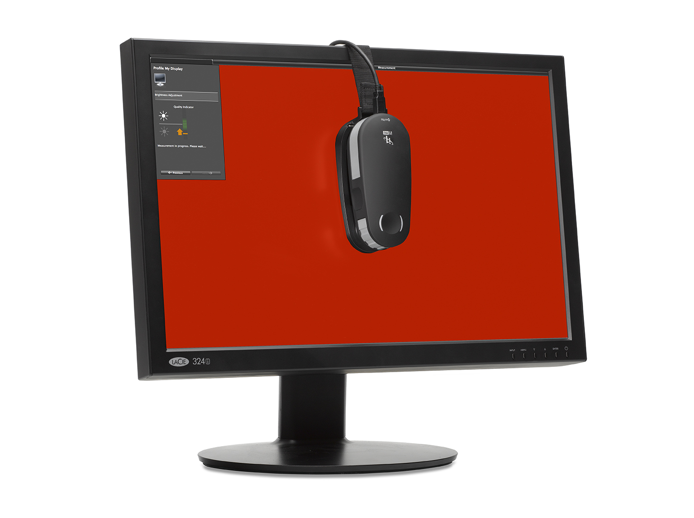
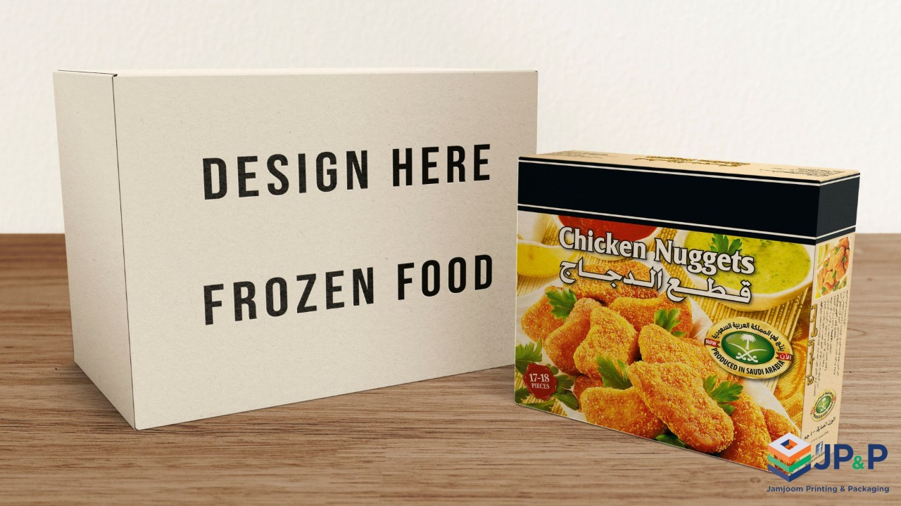
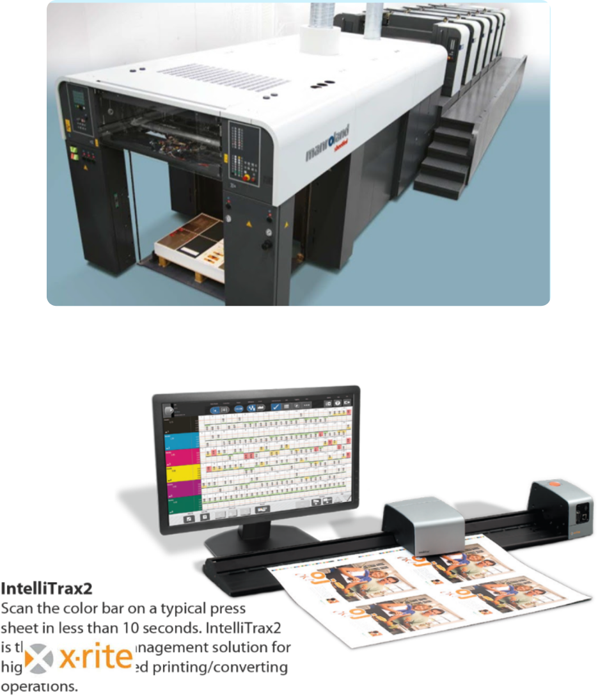
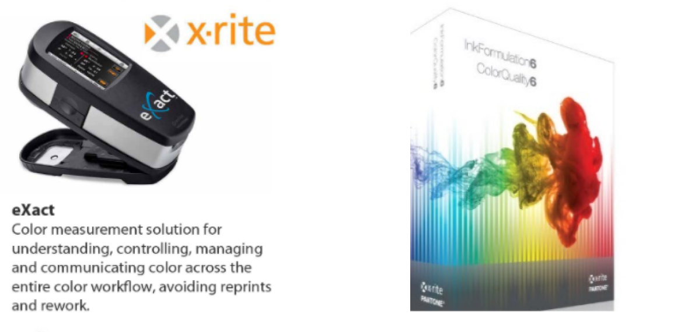
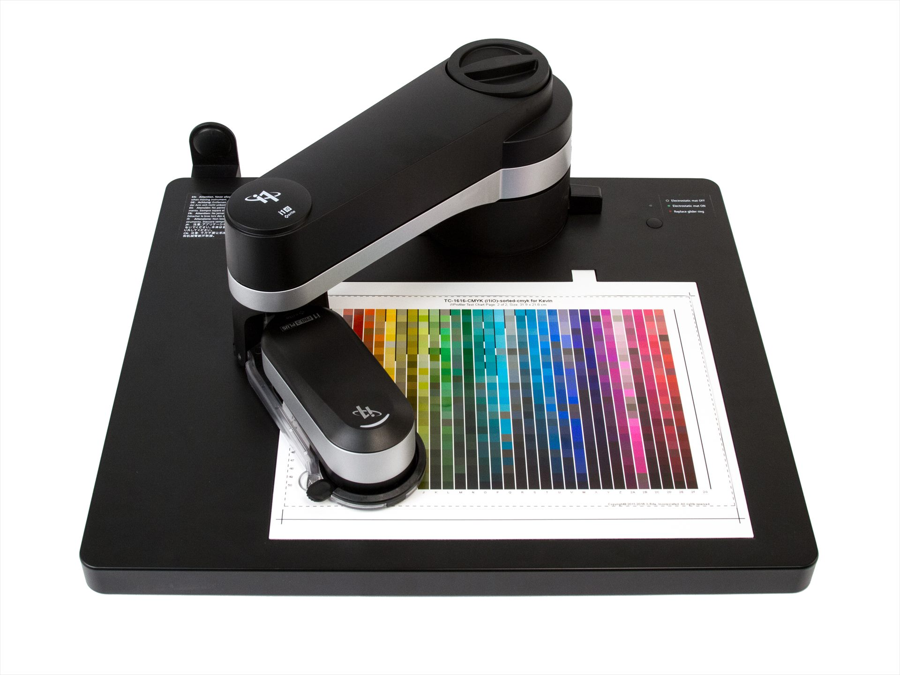
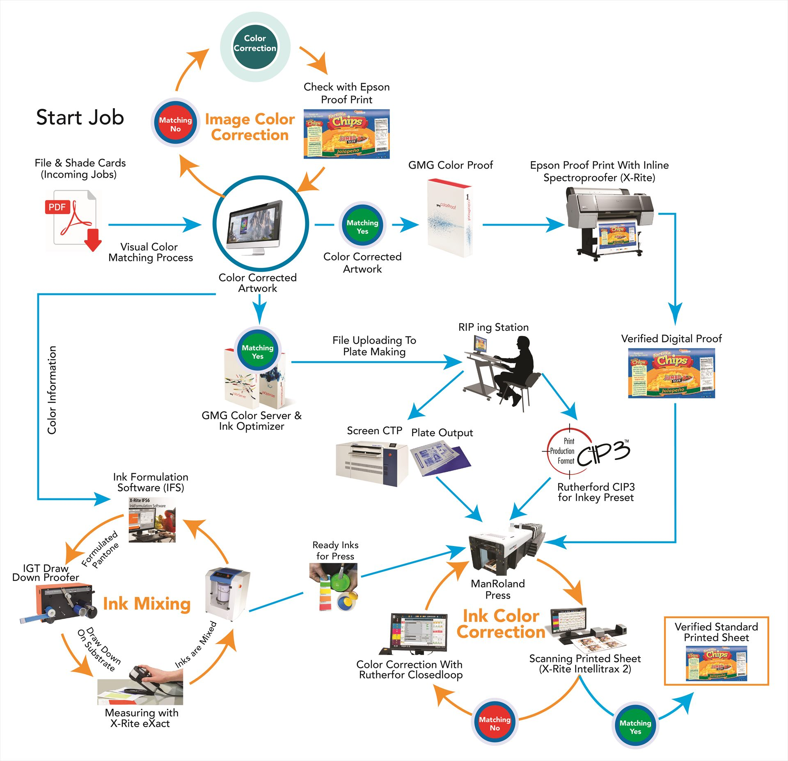
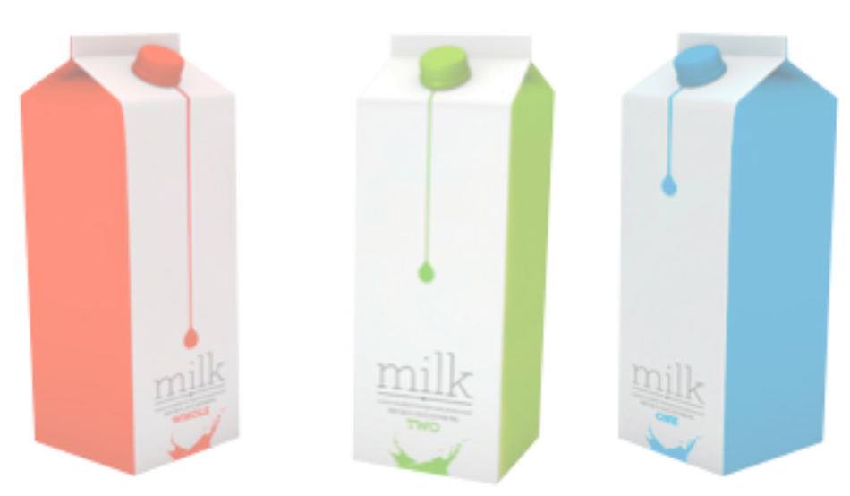
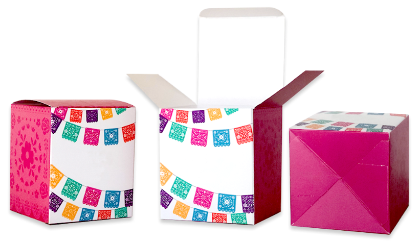

إدارة الألوان
ISO 12647-2 · GMG Color · X-Rite / Pantone
اللون عنصر أساسي في تغليف أي منتج، وتزداد أهميته لأنه حيوي وبالغ التأثير ويرسخ في الذاكرة.

إدارة الألوان وأهميتها
80%
اللون يزيد التعرّف على العلامة التجارية بنسبة 80%.
25%+
يقول أكثر من 25% من البالغين إن اللون يساعدهم على معرفة جودة المنتج.
الأول
اللون هو أول انطباع يكوّنه العميل عن العلامة التجارية.
القيمة
التغليف هو أداة التواصل المفضّلة لتعزيز قيمة العلامة التجارية.
تواجه إعادة إنتاج الألوان مشكلة جوهرية: فاللون الواحد لا يعطي بالضرورة النتيجة نفسها في جميع العمليات.
يُعدّ تفاوت الألوان أثناء الإنتاج تحدياً كبيراً لصناعة التغليف. ولا يضمن دقة اللون عبر مراحل التصميم والبروفات والطباعة إلا سير عمل تُدار فيه الألوان إدارة سليمة.

ما نملكه
- وحّدت JP&P عمليات ما قبل الطباعة والبروفات والطباعة وفق معايير ISO 12647-2 الخاصة بتغليف الأوفست.
- استثمرنا في أنظمة متقدمة لإدارة الألوان من GMG Color (ألمانيا) وX-Rite / Pantone (الولايات المتحدة).
- فرق ضمان الجودة وما قبل الطباعة والطباعة لدينا مدرّبة على المراقبة المستمرة، وفق إجراءات تشغيل قياسية وفحوصات للجودة.
- جميع العمليات مجهّزة بأحدث تقنيات البرمجيات والأجهزة.
منظومة إدارة الألوان لدى JP&P

نظام Rutherford X-Rite الآلي لقياس الألوان وتصحيحها (حلقة مغلقة CIP3) على مطبعة Roland
02
نظام X-Rite لتركيب الأحبار مع جهاز بروفات IGT
03
نظام JP&P لتعريف خصائص الكرتون
04اللون يؤثر في كل سير عمل، ولذلك يحتاج كل سير عمل إلى توحيد العمليات وإدارة الألوان.
تجري JP&P توحيد العمليات ومعايرة شاشات العرض وطابعات البروفات ومطابع الأوفست وفق معايير ISO 39، مع مراجعات دورية وإجراءات تصحيحية. وتُنشأ ملفات تعريف الكرتون باستخدام مقياس الطيف الضوئي الآلي X-Rite i1iO Pro 3 لمطابقة اللون وفق تغيّر نوع الكرتون. ويُجرى توحيد المطابع وتعريف خصائص الكرتون كل ستة أشهر، مع مراعاة تغيّرات الكرتون والمواد الكيميائية لضمان ثبات الألوان.
سير العمل

ما نقدّمه
وحّدت JP&P مراحل ما قبل الطباعة والبروفة الرقمية المطبوعة وألواح CTP والطباعة وفق سير عمل ISO 12647-2، بما يتيح الطباعة وفق معايير ISO 39 أو Gracol أو معايير مخصصة.
تحقق JP&P نتائج طباعة ثابتة عبر دفعات الطباعة بفضل نظام المسح X-Rite/Pantone Intellitrax، وتتأكد من تنفيذ الطباعة وفق معايير ISO 39 أو Gracol.
بروفات رقمية مطبوعة بمحاكاة أنواع مختلفة من الورق — كرتون العلب المطوية، وكرتون الدوبلكس، وكرتون الكرافت، والكرتون الرمادي — ضمن فرق لوني (دلتا E) لا يتجاوز 3.
أفضل جودة ممكنة على مختلف خامات التغليف بمحاكاة نتائج الورق المطلي وفق ISO 39، مع مقارنة كل عمل ببروفته الرقمية.
تستطيع JP&P طباعة ألوان CMYK والألوان الخاصة ضمن فرق لوني (دلتا E) أقل من 3، مع ضمان بقاء زيادة القيمة اللونية (TVI) وتوازن الرمادي ضمن الحدود الصارمة لمعيار ISO 12647-2.
يضمن برنامج X-Rite لتركيب الأحبار خلط الألوان الخاصة ضمن فرق لوني (دلتا E) لا يتجاوز 2.
تُستخدم تقنية الفحص البصري Global Vision لمقارنة المطبوع بالتصميم الأصلي والتحقق من سلامة كل عنصر من عناصر التصميم.
فريق طباعة خبير ومدرّب على استخدام أدوات إدارة الألوان لإعادة إنتاج الألوان بدقة.

